File: 000240.gt.txt (if the image is defective, simply delete all Arabic text and the line will be excluded)
وأمر الله موسى أن يخرج بني إسرائيل فلما أرادوا الخروج طلب جسد
File: 000241.gt.txt (if the image is defective, simply delete all Arabic text and the line will be excluded)
يوسف بن يعقوب ليحمله معه ، كما أوصى يوسف بني إسرائيل ، فاتته شارح
File: 000242.gt.txt (if the image is defective, simply delete all Arabic text and the line will be excluded)
بنت آشر بن يعقوب ، فقالت : تضمن لي البقاء حتى أدلك عليه ؟ حتى ضمن ذلك
File: 000243.gt.txt (if the image is defective, simply delete all Arabic text and the line will be excluded)
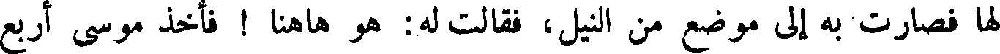
لها فصارت به إلى موضع من النيل ، فقالت له: هو ها هنا ! فأخذ موسى أربع
File: 000244.gt.txt (if the image is defective, simply delete all Arabic text and the line will be excluded)
صفائح ذهب ، فصور في واحدة صور نسر ، وأخرى صورة سبع ، وأخرى
File: 000245.gt.txt (if the image is defective, simply delete all Arabic text and the line will be excluded)
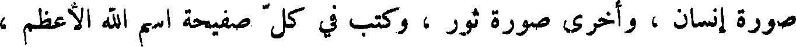
صورة إنسان ، وأخرى صورة ثور ، وكتب في كل صفيحة اسم الله الأعظم ،
File: 000246.gt.txt (if the image is defective, simply delete all Arabic text and the line will be excluded)
وألقاها في الماء ، فطفا تابوت الحجارة الذي كان فيه جسد يوسف ، وبقيت
File: 000247.gt.txt (if the image is defective, simply delete all Arabic text and the line will be excluded)
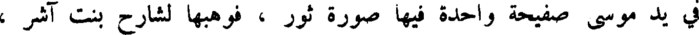
في يد موسى صفيحة واحدة فيها صورة ثور ، فوهبها لشارح بنت آشر ،
File: 000248.gt.txt (if the image is defective, simply delete all Arabic text and the line will be excluded)
لهم ، وقال لكل واحد منهم قولا ، وأعطى ليوسف سيفه وقوسه .
File: 000249.gt.txt (if the image is defective, simply delete all Arabic text and the line will be excluded)
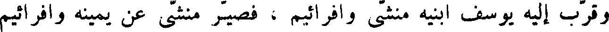
وقرب إليه يوسف ابنيه منشى وافرائيم ، فصير منشى عن يمينه وافرائيم
File: 000250.gt.txt (if the image is defective, simply delete all Arabic text and the line will be excluded)
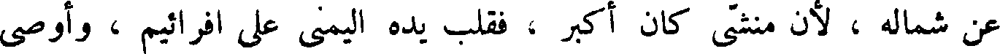
عن شماله ، لأن منشى كان اكبر ، فقلب يده اليمنى على افرائيم ، واصى
File: 000251.gt.txt (if the image is defective, simply delete all Arabic text and the line will be excluded)
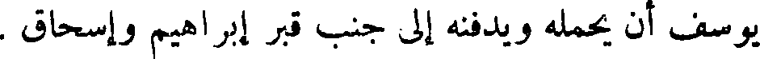
يوسف أن يحمله ويدفنه إلى جنب قبر إبراهيم وإسحاق .
File: 000252.gt.txt (if the image is defective, simply delete all Arabic text and the line will be excluded)
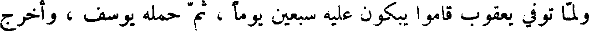
ولما توفي يعقوب قاموا يبكون عليه سبعين يوما ، ثم حمله يوسف ، واخرج
File: 000253.gt.txt (if the image is defective, simply delete all Arabic text and the line will be excluded)
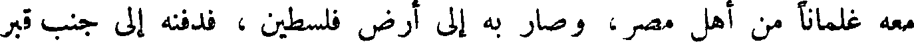
معه غلمانا من أهل مصر ، وصار به إلى ارض فلسطين ، فدفنه إلى جنب قبر
File: 000254.gt.txt (if the image is defective, simply delete all Arabic text and the line will be excluded)
إبراهيم وإسحاق .
File: 000255.gt.txt (if the image is defective, simply delete all Arabic text and the line will be excluded)
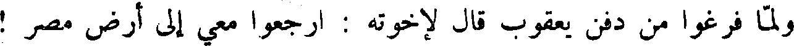
ولما فرغوا من دفن يعقوب قال لاخوته : ارجعوا معي إلى ارض مصر !
File: 000256.gt.txt (if the image is defective, simply delete all Arabic text and the line will be excluded)
فخافوه ، فقالوا له : قد أوصاك أبوك يعقوب أن تغفر خطيئتنا . قال : لا تخشوني !
File: 000257.gt.txt (if the image is defective, simply delete all Arabic text and the line will be excluded)
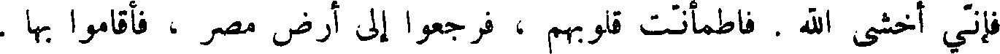
فأني أخشى الله . فاطمأنت قلوبهم ، فرجعوا إلى أرض مصر ، فألقموا بها .
File: 000258.gt.txt (if the image is defective, simply delete all Arabic text and the line will be excluded)
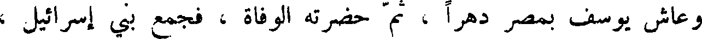
وعاش يوسف بمصر دهرا ، ثم حضرته الوفاة ، فجمع بني إسرائيل ،
File: 000259.gt.txt (if the image is defective, simply delete all Arabic text and the line will be excluded)
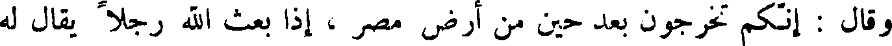
وقال : أنكم تخرجون بعد حين من ارض مصر ، إذا بعث الله رجلا يقال له
File: 000260.gt.txt (if the image is defective, simply delete all Arabic text and the line will be excluded)
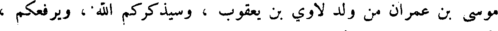
موسى بن عمران من ولد لاوي بن يعقوب ، وسيذكركم الله ، ويرفعكم ،
File: 000261.gt.txt (if the image is defective, simply delete all Arabic text and the line will be excluded)
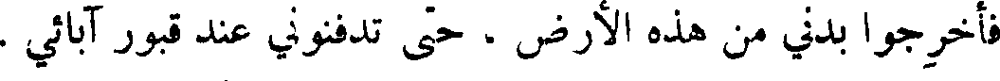
فأخرجوا بدني من هذه الأرض ، حتى تدفنوني عند قبور آبائي .
File: 000262.gt.txt (if the image is defective, simply delete all Arabic text and the line will be excluded)
ومات يوسف وله مائة وعشر سنين ، فصير في تابوت حجارة ، وصير
File: 000263.gt.txt (if the image is defective, simply delete all Arabic text and the line will be excluded)
في النيل .
File: 000264.gt.txt (if the image is defective, simply delete all Arabic text and the line will be excluded)
وكان في ذلك العصر أيوب النبي ابن اموص بن زارح بن رعوئيل بن عيصو
File: 000265.gt.txt (if the image is defective, simply delete all Arabic text and the line will be excluded)
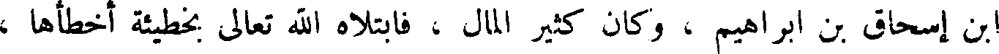
ابن إسحاق بن إبراهيم ، وكان كثير المال ، فابتلاه الله تعالى بخطيئة أخطأها ،
File: 000266.gt.txt (if the image is defective, simply delete all Arabic text and the line will be excluded)
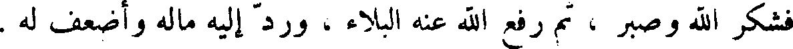
فشكر الله وصبر ، ثم رفع الله عنه البلاء ، ورد إليه ماله وأضعف له .
File: 000267.gt.txt (if the image is defective, simply delete all Arabic text and the line will be excluded)
ففعلت هذا ، فلأنتقمن منك بشر ولدك ، ولأ سلطنه عليك وعلى نسائك !
File: 000268.gt.txt (if the image is defective, simply delete all Arabic text and the line will be excluded)
فعظم ذلك على داود ، فقال له ناتان : أن الله قد تجاوز عن سبيلك ، فلن تموت ،
File: 000269.gt.txt (if the image is defective, simply delete all Arabic text and the line will be excluded)
ولكنه ينتقم منك بشر بنيك ، وأعلمه الله أن ولده الذي ولدته المرأة يموت ،
To Save: `Ctrl+s`, make sure to choose `Webpage, complete`!